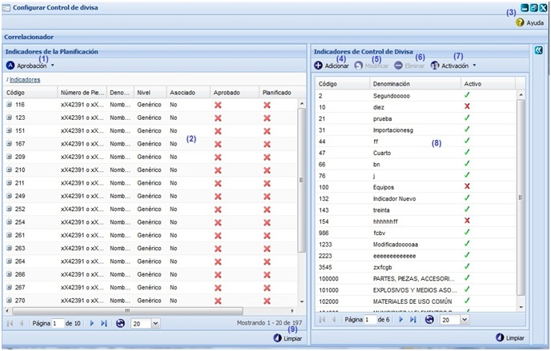
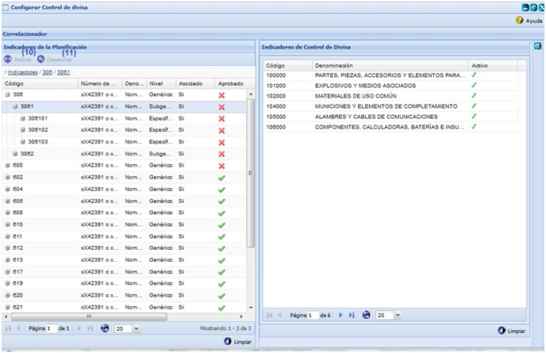
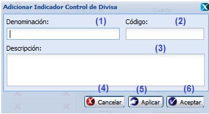

--Configurar control de divisa--
Para acceder a esta funcionalidad se debe seguir la siguiente ruta: Inicio\Planificación material\Control de divisa\Configurar control de divisa. Luego de acceder a la funcionalidad Configurar control de divisa el sistema mostrará la siguiente interfaz, ver figura 1 y 2.

Figura 1. Configurar Control de divisa\usuario rector

Figura 2. Configurar Control de divisa\usuario especialista
Las diferentes opciones que conforman la figura 1 y 2 permiten:
- Aprobar y Desaprobar. Esta acción le permitirá efectuar las funciones de aprobación sobre las asociaciones. Para ejecutar esta funcionalidad se debe desplegar el botón Aprobación y seleccionar las siguientes acciones de acuerdo a la operación a realizar:
- La acción Aprobar permite aprobar la asociación. Una vez seleccionado(s) el(los) indicador(es) asociado(s) que se desea(n) aprobar, el sistema le mostrará un mensaje de confirmación que se puede Aceptar o Cancelar según desee, si presiona la opción Aceptar, el sistema le mostrará un mensaje de información notificando que se aprobaron las asociaciones satisfactoriamente quedando así el estado de indicador que se encuentre asociado cambiado en la columna Aprobado. Se puede acceder a esta acción de manera rápida seleccionando el indicador que desea aprobar y presionar la combinación de las teclas (Alt + Q).
- La acción Desaprobar permite desaprobar el(los) indicador(es) asociado(s). Una vez seleccionado(s) el(los) indicador(es) que se desea(s) desaprobar, el sistema le mostrará un mensaje de confirmación que se puede Aceptar o Cancelar según desee, si acepta el mensaje el sistema le mostrará un mensaje de información notificando que se desaprobaron los indicadores satisfactoriamente quedando así el estado del indicador cambiado en la columna Aprobado. Se puede acceder a esta acción de manera rápida seleccionando el indicador que desea desaprobar y presionar la combinación de las teclas (Alt + W).
- Mostrar la lista de los indicadores de la planificación existentes en el sistema.
- Mostrar ayuda de la funcionalidad. Se puede acceder a esta funcionalidad seleccionando la combinación de teclas (Alt + H).
- Adicionar indicador de Control de divisa, ver Adicionar indicador. Se puede acceder a esta interfaz de manera rápida seleccionando la combinación de teclas (Alt + I).
- Modificar indicador Control de divisa. Se puede acceder a esta interfaz de manera rápida seleccionando la combinación de teclas (Alt + M). Esta acción es muy similar a la acción de Adicionar indicador Control de divis
- Eliminar indicador Control de divisa. Se mostrará un mensaje de confirmación que se puede aceptar o cancelar según sea el caso. Si se selecciona un indicador que esté siendo usado, el sistema mostrará un mensaje de error. Se puede eliminar un indicador de manera rápida seleccionando el mismo y presionando la tecla (Delete).
- Activar y Desactivar. Esta acción le permitirá efectuar las funciones de activación sobre los indicadores. Para ejecutar esta funcionalidad se debe desplegar el botón Activación, y seleccionar las siguientes acciones en dependencia de la operación a realizar:
- La acción Activar permite activar el indicador. El sistema inmediatamente le mostrará un mensaje de confirmación que puede o no aceptarlo según desee, si acepta el mensaje el sistema mostrará un mensaje de información notificando que se activaron los indicadores satisfactoriamente quedando así el estado del indicador cambiado en la columna Activo. Se puede acceder a esta acción de manera rápida seleccionando el indicador que desea activar y presionar la combinación de las teclas (Alt + T).
- La acción Desactivar permite desactivar el indicador. El sistema inmediatamente le mostrará un mensaje de confirmación que puede o no aceptarlo según desee, si acepta el mensaje el sistema mostrará un mensaje de información notificando que se desactivaron los indicadores satisfactoriamente quedando así el estado del indicador cambiado en la columna Activo. Se puede acceder a esta acción de manera rápida seleccionando el indicador que desea desactivar y presionar la combinación de las teclas (Alt + F).
- Mostrar la lista de los indicadores de Control de divisa existentes en el sistema.
- Limpiar todos los criterios de búsqueda, deshabilitando los filtros realizados. Se puede realizar esta operación seleccionando la combinación de teclas (Alt + L).
- Asociar indicadores, se debe seleccionar un indicador de planificación y presionar el botón Asociar, el sistema inmediatamente le mostrará un mensaje de información notificando que se asociaron los indicadores satisfactoriamente quedando así el estado del indicador cambiado en la columna Asociado. Se puede acceder a esta funcionalidad de manera rápida con la combinación de las teclas ( Alt+ K ).
- Desasociar indicadores, se debe seleccionar un indicador de planificación y presionar el botón Desasociar, el sistema inmediatamente le mostrará un mensaje de información notificando que se desasociaron los indicadores satisfactoriamente quedando así el estado del indicador cambiado en la columna Asociado. Se puede acceder a esta funcionalidad de manera rápida con la combinación de las teclas (Alt + U).
Pre-condiciones y validaciones que se deben tener en cuenta a la hora de realizar alguna acción en el sistema:
- Para aprobar un indicador de la planificación:
- El usuario debe tener permiso para acceder a la funcionalidad. Este debe ser un usuario con categoría rector.
- Debe existir al menos un indicador de la planificación registrado en el sistema.
- Debe existir al menos un indicador de la planificación que esté asociado.
- Debe existir al menos un indicador de la planificación que no esté aprobado.
- Si el indicador seleccionado no se encuentra asociado y desaprobado, cuando se desglosa la opción Aprobación de la interfaz, no se activa el botón Aprobar.
- Para desaprobar un indicador de la planificación:
- El usuario debe tener permiso para acceder a la funcionalidad. Este usuario debe ser un usuario con categoría rector.
- Debe existir al menos un indicador de la planificación registrado en el sistema.
- Tiene que existir al menos un indicador que esté aprobado y asociado.
- Si el indicador seleccionado no se encuentra asociado y desaprobado, cuando se desglosa la opción Aprobación de la interfaz, no se activa el botón Desaprobar.
- Para activar un indicador de Control de divisa:
- El usuario debe tener permiso para acceder a la funcionalidad. Este usuario debe ser un usuario con categoría rector.
- Se debe haber adicionado al menos un indicador de control de divisa.
- El botón Activar solo se activará al seleccionar un indicador de control de divisa que se encuentre desactivado.
- Para desactivar un indicador de Control de divisa:
- El usuario debe tener permiso para acceder a la funcionalidad. Este usuario debe ser un usuario con categoría rector.
- Se debe haber adicionado al menos un indicador de control de divisa.
- El botón Desactivar solo se activará al seleccionar un indicador de control de divisa que se encuentre activado.
- Para asociar un indicador de planificación:
- El usuario debe tener permiso para acceder a la funcionalidad, este no debe ser un usuario con categoría rector.
- Debe existir al menos un indicador de la planificación, de control de divisa y un concepto del plan registrado en el sistema.
- Si el indicador de la planificación seleccionado es un indicador padre, al seleccionar la opción Asociar, el sistema cambiará el estado de todos los indicadores de la planificación que se encuentren contenidos dentro del mismo, poniendo en la columna Asociado (Si).
- La opción Asociar se habilitará una vez seleccionado al menos un indicador de la planificación y un indicador de control de divisa o concepto del plan.
- Las funcionalidades de asociación solo le saldrá habilitada a los especialistas con comportamiento Centro de balance, pues estos son los usuarios encargados de efectuar las asociaciones entre los indicadores, los usuarios con categoría rector solo controlan que se hayan efectuado las asociaciones y efectúan la aprobación de las mismas.
- Si selecciona un indicador de la planificación que se encuentra registrado en un plan de Operaciones comerciales o no comerciales, es obligatorio efectuar la asociación de dicho indicador con el concepto del plan correspondiente.
- La asociación de uno o varios indicadores de la planificación a un indicador de control de divisa se puede hacer habiendo seleccionado un dato en el panel concepto del plan o directamente (sin seleccionar un concepto del plan) con el indicador de Control de Divisa. Uno o varios indicadores de la Planificación podrán estar asociados a varios indicadores de divisa diferenciados por el concepto del plan.
- Una vez efectuada la asociación entre los indicadores, el sistema marcará automáticamente los indicadores de control de divisa con un color significativo, de forma tal que el usuario que esté interactuando con el sistema pueda saber a qué indicador de control de divisa se encuentra asociado el indicador de la planificación seleccionado.
- Para desasociar un indicador de planificación:
- El usuario debe tener permiso para acceder a la funcionalidad, este no debe ser un usuario con categoría rector.
- Debe existir al menos un indicador de la planificación registrado en el sistema.
- Debe existir al menos un indicador de la planificación asociado a un indicador de control de divisa o concepto del plan.
- Si el indicador de la planificación seleccionado es un indicador padre, al seleccionar la opción Desasociar, el sistema cambiará el estado de todos los indicadores de la planificación que se encuentren contenidos dentro del mismo, poniendo en la columna Asociado (No).
- La opción Desasociar se habilitará una vez seleccionado al menos un indicador de la planificación de los listados en el panel Indicadores de la planificación.
- Las funcionalidades de asociación (Asociar/Desasociar) solo le saldrá habilitada a los especialistas, pues estos son los usuarios encargados de efectuar las asociaciones entre los indicadores, los usuarios con categoría rector solo efectúan la aprobación de las asociaciones.
- Si se intenta Desasociar un indicador de la planificación de un indicador de control de divisa y este no ha sido asociado al indicador de la planificación seleccionado se muestra el siguiente mensaje de información: “Este indicador de divisa no se encuentra asociado al indicador de la planificación seleccionado.”.
- Para eliminar un indicador de Control de divisa:
- El usuario debe tener permiso para acceder a la funcionalidad. Este usuario debe ser un usuario con categoría rector.
- Se debe haber adicionado al menos un indicador de control de divisa.
- Si el indicador de control de divisa seleccionado se encuentra en uso el sistema le mostrará el mensaje de error: “El(los) indicador(es) de control de divisa seleccionado(s) se encuentran en uso.”. Un indicador de control de divisa se encuentra en uso si está siendo empleado en alguna asociación que se encuentra usada en el sistema.
Adicionar indicador de control de divisa

Figura 3. Adicionar Indicador Control de divisa
Las diferentes opciones que conforman la figura anterior permiten:
- Introducir la denominación del indicador de control de divisa.
- Introducir el código de Adicionar Indicador Control de divisa.
- Introducir la descripción del indicador Control de divisa.
- Cerrar la ventana, se muestra un mensaje de información sobre el éxito de la operación realizada, se acepta el mensaje y queda actualizado el listado existente en la interfaz principal.
- Guardar los datos, limpia los campos y permanece en la misma interfaz para que pueda adicionar más clientes en caso requerido.
- Cancelar las acciones y abandona la interfaz.
Nota: Para adicionar un indicador Control de divisa hay que tener en cuenta las siguientes validaciones para los campos Denominación, Código y Descripción:
- Todos los campos son obligatorios, en caso de dejar estos campos vacíos el sistema debe mostrar un mensaje de error en el mismo campo. Si se presiona el botón Aceptar o Aplicar de la interfaz el sistema mostrará un mensaje de información notificando que existen campos vacios.
- No se permite adicionar un indicador de control de divisa con un mismo código. Si esto ocurre el sistema mostrará un mensaje de error.
- El campo código solo acepta valores numéricos hasta 6 dígitos y el carácter especial (.). De introducir cualquier otro dato el sistema mostrará un mensaje de error en el mismo campo.
- El campo denominación solo acepta letras hasta 255 caracteres, de introducir cualquier otro dato el sistema mostrará un mensaje de error en el mismo campo.
- El campo descripción acepta letras, números y caracteres especiales sin límites.
Buscar indicadores
Esta funcionalidad permite efectuar una búsqueda mediante filtrado en las columnas. Para efectuar la misma debe estar en el panel Indicadores de la planificación, Indicadores de control de divisa o Concepto del plan, ver figura 1. Una vez que accedió a uno de estos paneles, se procede a presionar clic en el botón “” que aparece en la parte derecha de cada columna. Luego de presionado el mismo, se procede a desplegar la columna y se ofrece la posibilidad de realizar búsqueda mediante filtrado. Se introduce o selecciona el criterio de filtrado según la información que brinde la columna seleccionada. Inmediatamente se presiona la tecla Enter y el sistema le mostrará en la interfaz los datos según el criterio de filtrado seleccionado. En caso de que no existan datos a mostrar para el criterio de filtrado seleccionado el sistema lo notificará mostrando el mensaje de información: “No existen datos que se correspondan con el criterio de búsqueda especificados.”.
Nota: Una vez efectuados los criterios de búsqueda, si desea limpiar los filtros efectuados, se puede apoyar en la opción Limpiar que aparece en el paginado de cada panel en dependencia de la búsqueda realizada.